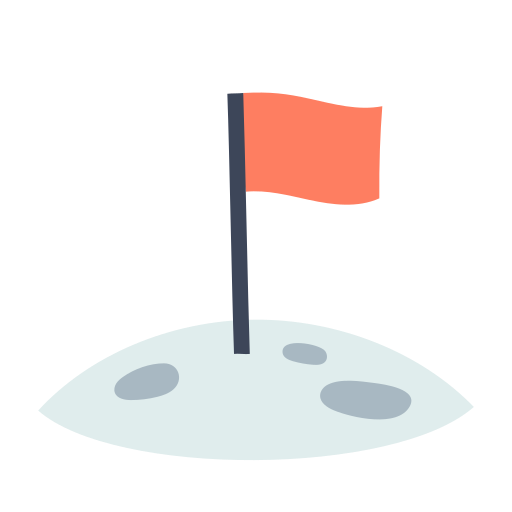

 Updating and redesigning existing Front-End and Back-End projects.
Creating new ones for costumers needs.
Using Angular 8+ to develop Front-End.
Using Flex-Layout for HTML UI layout for Angular applications, using flexbox and a responsive layout.
Using NVM for managing Node versions.
Using Angular Material for UI.
Creating REST API using SpringBoot.
Using JPQL, JPA & Criteria to do queries.
Using ThymeLeaf for templates.